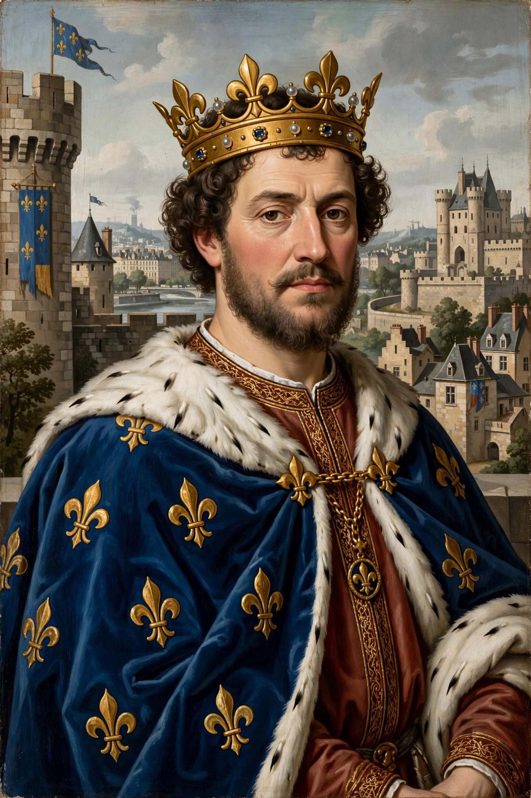

Philip II (21 August 1165 – 14 July 1223), known as Philip Augustus (French: Philippe Auguste), was King of France from 1180 to 1223. His reign was one of the most successful in medieval French history: he greatly expanded the royal domain, broke the Angevin "empire" of the Plantagenet kings of England, and transformed France into a prosperous and powerful state.

| Reign | 18 September 1180 – 14 July 1223 |
|---|---|
| Coronation | 1 November 1179, Reims |
| Predecessor | Louis VII |
| Successor | Louis VIII |
| Born | 21 August 1165, Paris |
| Died | 14 July 1223, Mantes-la-Jolie |
| Dynasty | Capetian |
| Spouses | Isabella of Hainault; Ingeborg of Denmark; Agnes of Merania |
Son of Louis VII and Adèle of Champagne, Philip was crowned during his father's lifetime. He curtailed the power of the great feudal lords and in 1182 expelled the Jews from the royal domain (readmitting them in 1198). In 1190 he departed on the Third Crusade alongside Richard I of England, with whom he quarrelled; after the capture of Acre in 1191, Philip returned to France, pleading illness.
While Richard was captive in Germany, Philip attacked his continental lands. After Richard's death (1199), Philip exploited King John's weaknesses: in 1204 he conquered Normandy, Maine, Anjou, and Touraine, roughly doubling the royal domain. John's attempt to recover his lands ended in Philip's decisive victory at the Battle of Bouvines in 1214 — a triumph over a coalition of John, Emperor Otto IV, and the counts of Flanders and Boulogne — which consolidated royal power and shook both the English and imperial thrones.
Philip professionalized royal administration with salaried officials called baillis, preserved royal archives, and strengthened Paris: he paved streets, built the Louvre fortress, expanded the city walls, and chartered the University of Paris (1200). He was the first Capetian to style himself "King of France" rather than "King of the Franks."
See also: Capetian dynasty · Battle of Bouvines · John, King of England